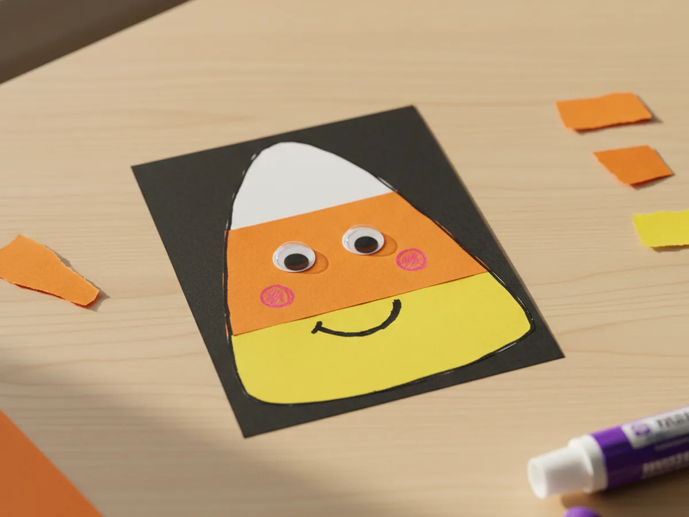
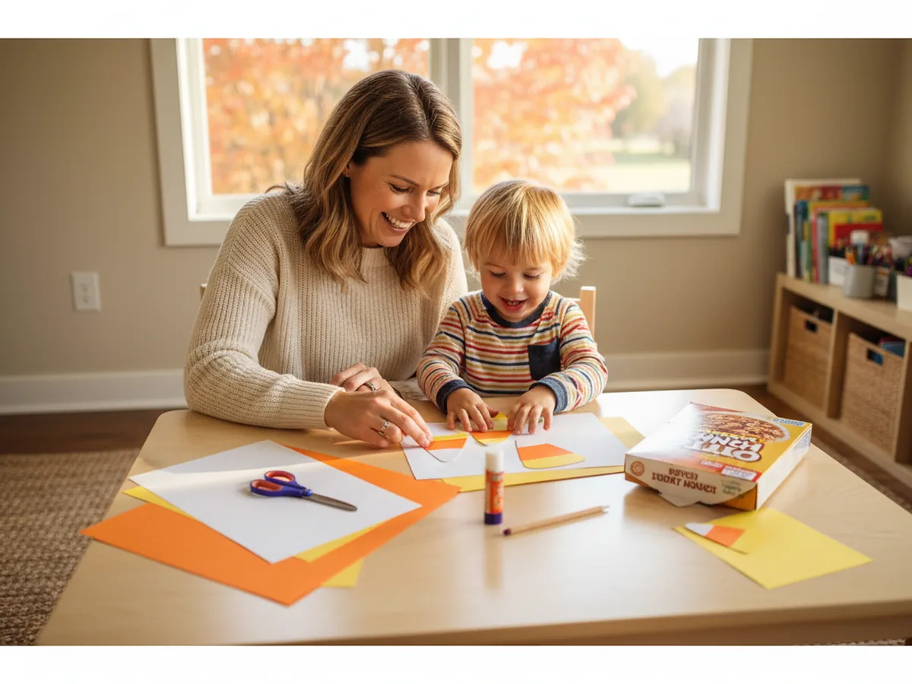
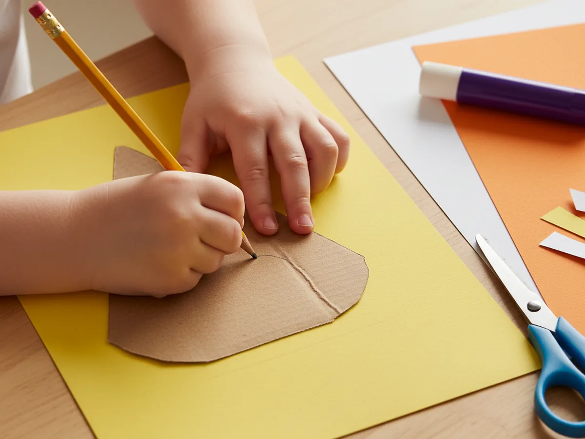
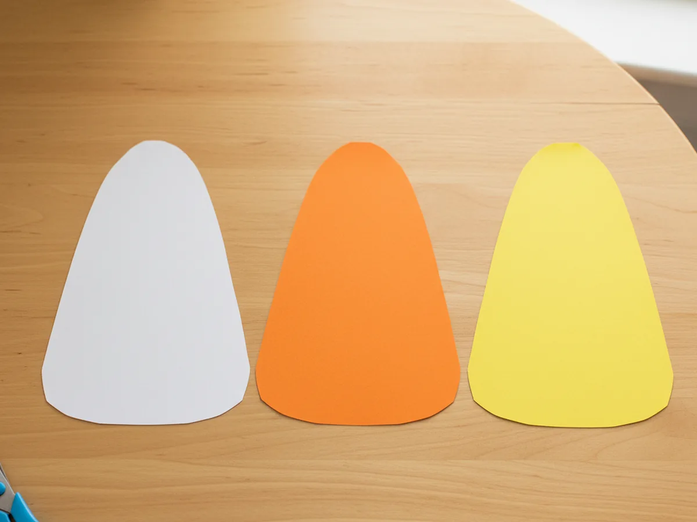
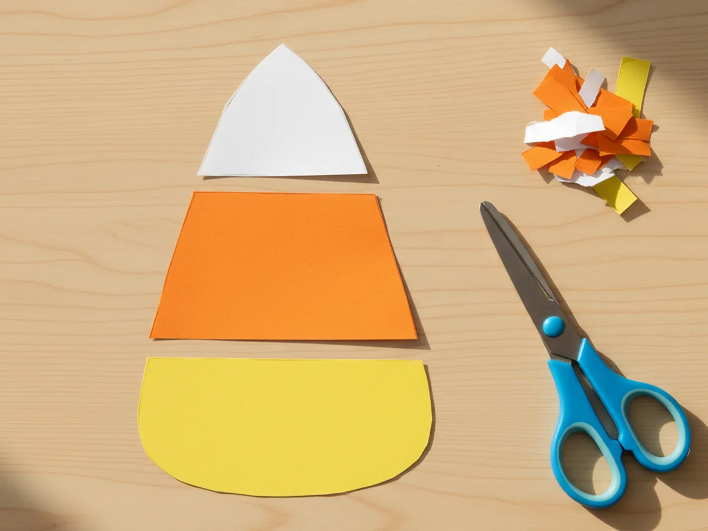
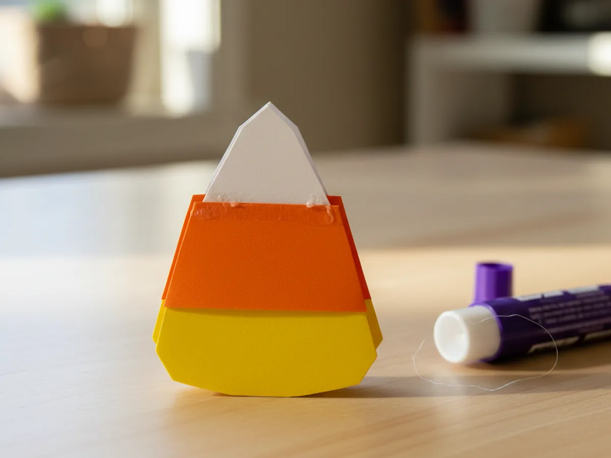
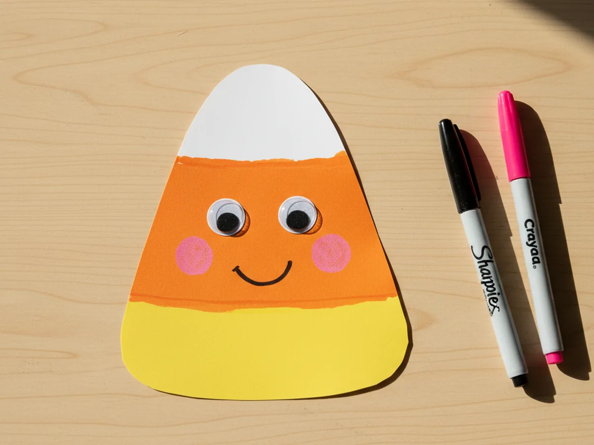
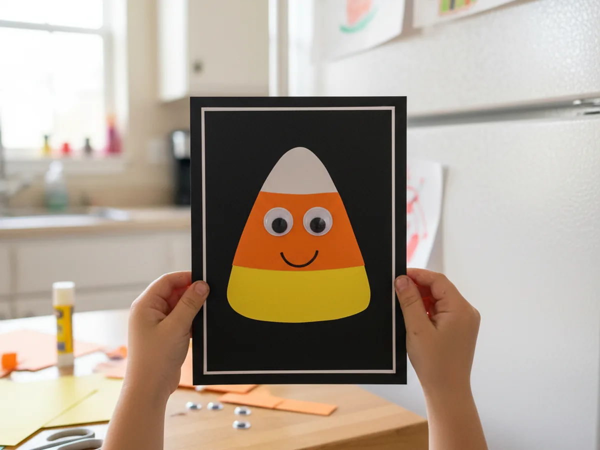

When the leaves start to turn and Halloween creeps closer, this candy corn paper craft is one of the sweetest little projects to pull out for a cozy afternoon at the kitchen table. With three sheets of construction paper, a pair of safety scissors, and about 25 minutes together, you and your child will end up with a cheerful candy corn that looks like the real thing, only bigger, cuter, and totally calorie free. 🍂
The best part is that this paper candy corn craft is forgiving from start to finish. Even if the lines wobble and the bands do not match exactly, the finished candy corn still looks adorable. It is a low pressure, low mess craft that gives toddlers and big kids the same proud little grin at the end.
Why Kids Love This Craft
Kids love this candy corn paper craft for two simple reasons: they recognize the shape instantly, and they get to make a giant version of a treat they already love. Holding up a candy corn the size of their hand feels delightfully silly to a young child, and it sparks the kind of wide grin that makes a mom's whole afternoon.
This project also quietly builds real skills without ever feeling like a lesson. Tracing the triangle works on early pencil grip. Cutting along straight lines strengthens scissor control. Lining the three color bands up to glue them in the right order is a beautifully gentle introduction to sequencing, and choosing how to decorate the face encourages independent creative thinking. Each finished piece becomes a tiny personality, which makes kids want to make a whole candy corn family.
Then there is the seasonal magic. A paper candy corn instantly turns into a fridge decoration, a window cling, a banner piece, or a Halloween card. Your child gets to see their craft used in real life, which makes the whole thing feel important and special. That sense of "I made this and it matters" is exactly the kind of moment that turns a regular Tuesday into a sweet little memory. 💛

What You'll Need
Here is everything you need to make this candy corn paper craft together at home. Lay the supplies out on a clean table before your child sits down so the whole project flows without anyone running off mid step to find scissors.
- Crayola Construction Paper (240 Sheets, 12 Colors), includes all three candy corn colors of white, orange, and yellow in one bright pack.
- Astrobrights Colored Cardstock Primary 5-Color Assortment, sturdy 65 lb cardstock if you want a candy corn that stands up on its own.
- Fiskars 5 Inch Pointed-Tip Kids Scissors, safe blades that cut crisp straight lines on construction paper.
- Elmer's Disappearing Purple Washable Glue Sticks (18 Pack), dries clear so the bands look seamless, washes off little fingers easily.
- Genie Crafts Self-Adhesive Googly Eyes (500 Pieces), peel and stick eyes that turn the candy corn into a smiling character.
- Crayola Broad Line Markers (10 Classic Colors), for drawing the mouth, rosy cheeks, and any extra fall doodles.
- Sharpie Fine Point Permanent Markers (Black, 12 Count), for sharp little face details and outlining the candy corn cleanly.
- A pencil and a ruler, for tracing the triangle template before cutting.
- A piece of scrap cardstock or cereal box, for making one reusable triangle template.
Step-by-Step Instructions
This candy corn paper craft goes together in six gentle steps that even a 3 year old can follow with a little help. Take it slowly, hand over the easy parts, and enjoy the build. ✨
Step 1: Trace the Candy Corn Triangle Onto All Three Colors
Start by drawing a tall rounded triangle template on a piece of scrap cardstock or an old cereal box. Aim for roughly 6 inches tall and 5 inches wide at the base, with a softly curved bottom edge so it looks like a real candy corn shape. Cut the template out once and keep it for tracing. Then place the template on a sheet of white construction paper, then orange, then yellow, and let your child trace around the edge with a pencil each time.
Three matching pencil outlines, one on each color, is everything you need to start the paper candy corn craft.

Step 2: Cut Out the Three Candy Corn Triangles
Now bring out the safety scissors. Let your child cut along each pencil line so you end up with three matching candy corn triangles, one white, one orange, one yellow. If the edges come out a little wavy, that is completely fine. A handmade candy corn paper craft looks more charming when the cuts are not perfectly straight. Stack the three triangles on top of each other when you are done to make sure the sizes match closely enough to glue.

Step 3: Slice Each Triangle Into the Candy Corn Bands
This is the magic moment that turns three plain triangles into one real candy corn paper craft. Slice the white triangle horizontally across its top third, so you keep only the small white pointed top. Slice the orange triangle horizontally so you keep only the middle band, trimming both the tip and the wide bottom away. Then take the yellow triangle and trim a small amount off the top so its wider bottom becomes the wide bottom band of your candy corn.
When the three pieces are laid out together, they should already look like a giant candy corn waiting to be glued.

Step 4: Glue the Color Bands Back Together
Pull out the glue stick. Place the wide yellow band flat on the table first because it is the base. Run a stripe of glue along the top edge of the yellow band. Lay the orange middle band onto the glue, lining up the side edges so the candy corn shape stays clean. Then run a stripe of glue along the top edge of the orange band and press the small white pointed top on top. Hold each seam for a count of five so the bond sets.
Step back and admire it. You and your child now have a real paper candy corn sitting in front of you, the size of a juice box. That alone gets a big smile.

Step 5: Add a Sweet Smiling Face
Now the candy corn becomes a character. Press two small self adhesive googly eyes onto the orange middle band, spaced a little apart. Use a black fine point marker to draw a curved smiling mouth just below the eyes. Add two small pink or red dots for rosy cheeks on either side of the smile with a marker. If your child wants, draw a little tongue, a tiny tooth, or eyelashes for extra personality. This is the step where the candy corn paper craft turns from a shape into a friend.

Step 6: Mount and Display the Candy Corn
Time to give your candy corn a place to live. Cut a piece of black or fall orange cardstock slightly larger than the finished candy corn. Glue the candy corn in the center, then trim around it with about half an inch of border so the candy corn pops against the backing. Tape the finished candy corn paper craft to the fridge, slide it into a clear plastic sleeve for the front door, or string a length of yarn between several candy corns to make a quick Halloween garland. Your child will see it every time they walk past, and that is the whole point. 🎃

Variations to Try
Mini Candy Corn Garland: Make a half dozen smaller candy corns out of half size triangles and punch a tiny hole at the top of each white tip. Thread baker's twine through the holes to create a cheerful little candy corn garland to hang across a doorway or above the snack table at a Halloween playdate.
Candy Corn Greeting Card: Skip the standalone candy corn and instead glue a finished mini candy corn onto the front of a folded sheet of cardstock. Write a sweet message inside like "Have a sweet fall" or "Boo from us" and turn the craft into a card to mail to grandparents, a teacher, or a neighbor.
Cute Candy Corn Friends Family: Make several candy corns together and give each one its own personality. Add a tiny paper bow, a top hat, a flower clip, or different facial expressions so the whole family has a candy corn character. Line them up on a shelf for a sweet fall display that doubles as imaginative play.
Final Thoughts
This candy corn paper craft is exactly the kind of project that makes fall feel cozy without taking over your kitchen. It uses paper you probably already have, takes less than half an hour, and gives your child a finished craft they will want to show off to anyone who walks in the door. The candy corn might end up a little crooked or extra glittery or wildly decorated with stickers, and that is what makes it perfect.
If your little one loved making this paper candy corn, save the tutorial on Pinterest so you can come back to it every fall. Happy crafting, friend.
More Crafts You'll Love
If your child loved making this candy corn, they will love these other festive fall paper projects next: